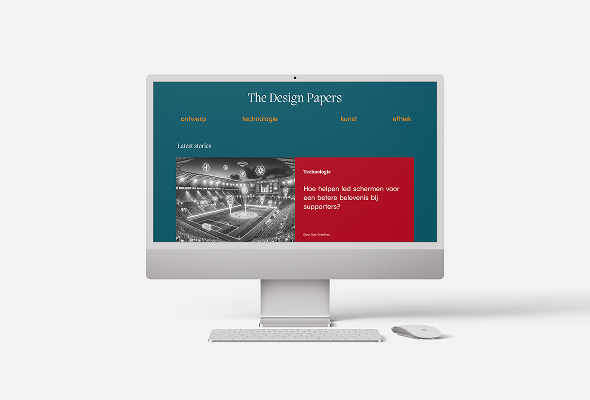

THE DESIGN PAPERS ONLINE MAGAZINE

Coding | Webdesign | Research | Photography
For my first project during my studies, I developed my own website using HTML and CSS. The website features
a self-written article filled with content. The article discusses how technological developments in stadiums
enhance the fan experience.
